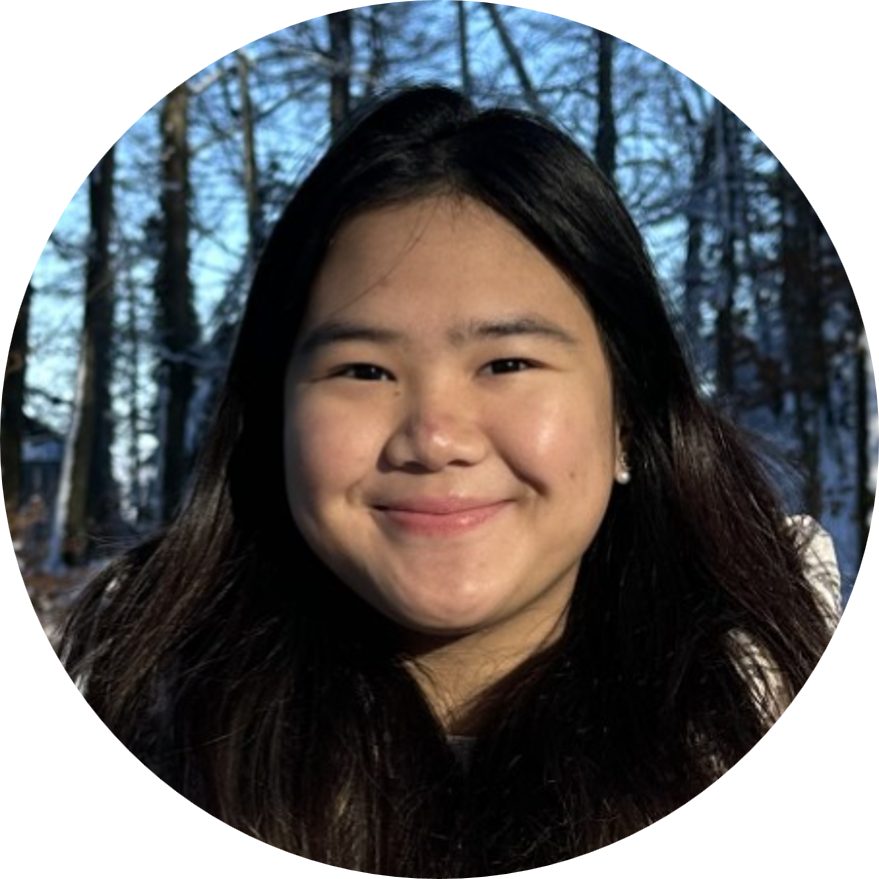
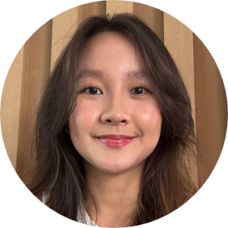

The Team
Lab director

Yu Junhong— Assistant Professor of Psychology
PhD, The University of Hong Kong
Research interests: I am interested in understanding how the exposome—the cumulative environmental exposures across the lifespan, shapes brain health in older adults. My goal is to leverage this research to inform interventions and policies that promote healthier lifestyles and environments, ultimately supporting healthy brain aging. In addition to my work on aging, I study mind wandering, particularly during resting-state fMRI, and investigate how patterns of spontaneous thought and their neural correlates are associated with psychopathology.
Research Staff

Charly Billaud — Research Fellow
PhD (Neurosciences), Aston University, Birmingham, United Kingdom
Research interests: Translational research involving neuropsychology and neuroimaging, including structural/functional MRI, DTI, and MEG. I have a particular interest in both aging and paediatric clinical populations with neurological disorders and developing markers of cognition and behaviour. My work involves structural and functional network analyses and graph theory.

Dexter Chew — Research Assistant
BA (Psychology), University at Buffalo
Research interests: My research interests are in topics such as Mental Health of Elderly Patients, Elder Abuse with Long-Lasting Psychological consequences as well as Psychosocial Development of Criminals. I became interested in the mental health aspects of the elderly stemming from 2 years of working in the non-profit sector as well as being an active member of the grassroots level in Singapore. This has helped establish the different views and interests in the elderly being overlooked or becoming a marginalized group of individuals in society. Further interests in criminal psychosocial developments stemmed from an interest in reading serial killer bibliographies and documentaries that have led to a fascination of how the minds of hardened criminals are like.
Hoh Sum Yee — Research Assistant
B.A. Honours Specialization in Psychology, University of Western Ontario Research interests: Research Interests: In the past, my research has spanned from perceptual topics such as auditory and music perception, tonal language and absolute pitch, to social topics such as social comparison and the role of social media in exarcerbating phenomenons such as imposter syndrome. More recently, I have developed an interest in neuropsychology, particularly in relation to sex and gender differences, and am excited to explore the world of neuroimaging!
Graduate students

Savannah Siew — PhD student
B.Soc.Sci (Psychology), National University of Singapore
Research interests: Neuropsychology, mindfulness, clinical psychology

Janice Koi — PhD student
B.A. Hons (Psychology), Nanyang Technological University
Research Interests: I am interested in using multimodal neuroimaging techniques to study the neurocognitive mechanisms of healthy aging.
See Qi Rui — PhD student
B.Sc. (Hons) in Biological Sciences, Nanyang Technological University
Research Interests: I am interested in investigating the neurocognitive role of sleep and mental health in healthy aging and neurodegenerative disorders.
Timothy Aw — PhD student
B.Soc.Sci. (Hons) in Psychology, National University of Singapore
Research Interests: I am interested in how age-related changes in brain connectivity relate to cognitive and behavioural variation in typically developing populations.
Undergraduate students

Clarisse Leong — FYP/URECA student
Research Interests: I would be keen to generally explore the topic of youths diagnosed with anxiety.
Lucius Hong — FYP/URECA student
Research Interests: My interests lie in understanding the development of psychopathic traits and behaviours in individuals, as well as analysing neurological markers that may predict risks of antisocial behaviour in youths through fMRI data analysis and normative modelling. Additionally, I am interested in criminal behavioural psychology, as well as correctional psychology involving rehabilitation of offenders.
Jerome Wee — FYP student
Research Interests: My research interest is in behavioural neuroscience, specifically in how the brain imaging can help to better define and understand behavioural disorders or addictions

Wong Sun Yee — FYP student
Research Interests: My interest lies in neuropsychology, particularly in the study of psychiatric conditions. I am interested in how differences in brain structure, brain function, and cognitive processes contribute to mental health difficulties, and how this knowledge can improve our understanding, assessment, and support for individuals with psychiatric disorders.
Raphael Choo — FYP student
Research Interests: My research interests centre around the pathophysiology of neurodegenerative diseases, specifically longitudinal disease modeling and multimodal biomarker identification. In addition, I am interested in region-specific cortical thinning, psychometric and neurocognitive decline trajectories, and mapping disruptions in functional and structural connectivity. I aspire to provide insights for future breakthroughs in gerontological care and supporting healthier aging trajectories.
Jonas Ching — URECA student
Research Interests: Jonas’s interest lies in the study of psychopathology — with an emphasis on mood and anxiety disorders in youths and adults. He hopes to better understand the mechanisms underlying these diseases through leveraging cognitive neuroscience to investigate the factors that contribute to their development and evaluate the interventions the promotes their recovery.
Grant Tan — URECA student
Research Interests: My interests lie in the study of the neuropsychological consequences of early adversity, particularly the factors that contribute to the development of individuals’ resilience and vulnerability. I am also interested in exploring the link between the neurological signatures of mood disorders and how they may contribute to cognitive and behavioural differences.
Giam Yin Tian — URECA student
Research Interests: I am interested in understanding how alterations in brain structure and function contribute to psychiatric and neurodegenerative disorders, particularly how these neural changes influence cognition, emotion and behaviour. I am especially interested in using neuroimaging to investigate these brain-behaviour relationships and hope to contribute to improving psychological assessment and intervention.
Cao Zijun — URECA student
Research Interests: My research interests lie in examining neurodegenerative diseases and translating findings into current medical practice. Additionally, I am also interested in examining mental health conditions, and I wish to find out more about the biomarkers of certain mental health diseases and hope to contribute to current mental health treatment and diagnosis.
Previous Students
FYP
- Xavier Lim (2025-2026) — Recipient of A*STAR National Science Scholarship | Lee Kuan Yew Gold Medal
- Wang Xinkai (2025-2026)
- Yong Jia Hui (2025-2026)
- Sarah Aleisha (2025-2026)
- Shona Chong (2025-2026)
- Jayden Ting (2025-2026)
- Candace Tan (2024-2025)
- Ellsie Lee (2024-2025)
- Lee Zheng Long (2024-2025) — Admitted to PhD @ Max Planck School of Cognition | Lee Kuan Yew Gold Medal
- Kayla Tan (2024-2025)
- Lisa Wong (2023-2024)
- Tan Fu Miao (2023-2024) — Admitted to MPhil @ Cambridge | Lee Kuan Yew Gold Medal, and Best Datablitz Presentation at AS4SAN 2024 conference
- Angel Lee (2023-2024)
- Genevieve Ling (2022-2023)
- Cleon Chang (2022-2023)
- Yuvaraj Arumugam (2022-2023)
- Loh Raye Fion (2021-2022) — Admitted to Master of Psychology (Clinical) at James Cook University
URECA
- Nicolette Marie Monterio (2025-2026)
- Sherrer See (2025-2026) — Best Datablitz Presentation at AS4SAN 2026 conference
- Rachel Ng (2025-2026)
- Charissa Gan (2025-2026)
- Clarisse Leong (2025-2026)
- Lucius Hong (2024-2025)
- Nicolas Lok (2024-2025)
- Emilienne Ho (2024-2025)
- Bryan Yeo (2024-2025)
- Kng Jia Hao (2023-2024) — Admitted to MSc @ The University of Manchester
- Wang Jieqi (2023-2024)
- Alastair Khoo (2023-2024)
- Xavier Lim (2023-2024)
- Lee Zheng Long (2022-2023)
- Gisele Cheong (2022-2023)
- Celine Chan (2021-2022)
- Dan Yuet Ruh (2021-2022) — Admitted to MD @ Duke-NUS